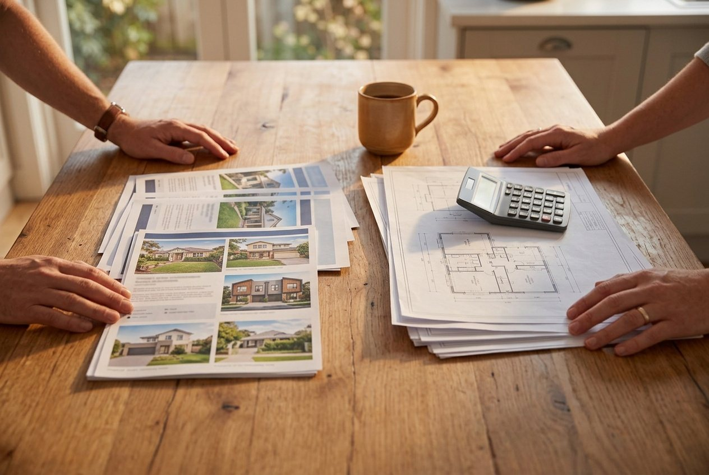
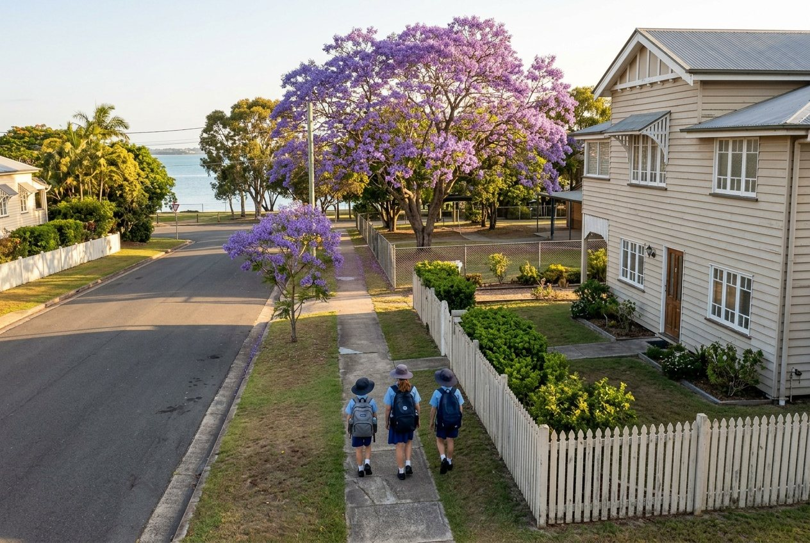

Your questions answered · Knockdown rebuild
Knockdown rebuild vs buying a new house:
which actually costs less?
This is the real decision most Bayside families are making, and it isn't a sum. It's two lists. Here's what goes on each, without a single made-up figure, so you can do the comparison with your own numbers and your own street.
 Nathan Brain, carpenter and builder at Sabre
17 September 2026
5 min read
Nathan Brain, carpenter and builder at Sabre
17 September 2026
5 min read

The two listsRebuild or move?Part of a bigger picture: the whole knockdown rebuild path, step by step.
What's on the moving list?
Write these down with your own numbers. A conveyancer and an agent can give you the first three for your situation.
- Selling the old house: agent's commission, marketing, conveyancing, and any work to get it presentable.
- Buying the new one: transfer (stamp) duty, conveyancing, inspections, loan costs if the mortgage changes.
- The move itself, and the overlap if the dates don't line up.
- The price gap. What a new or near-new house in a street as good as yours actually costs, against what yours would sell for as an old house. On the Bayside, that gap is usually the biggest number on either list.
- What you give up: the school catchment, the walk to the water, the neighbours. Not a dollar figure, and not nothing.
What's on the rebuild list?
- The old house coming down: asbestos removal, demolition, the disconnections. What asbestos means is here.
- The site: the soil test, any retaining or earthworks the slope needs, and whatever the overlays add.
- Design and approvals: the designer, the certifier, a development application if an overlay triggers one.
- The build itself. Size, storeys and finish, on a fixed price contract with as few allowances as the block allows.
- Living somewhere else for the length of the build, with the practical completion date in the contract as your planning number.
- What you keep: the street, the school, the neighbours, and a block you already own with no duty to pay on it.
The nine things that move the build number are here. None of them is a price; all of them are on your block.
What is the block you own worth to you?
This is the item people miss, and it's the one that tips most Bayside comparisons.
You already own the land. You don't pay duty on it again. You don't pay an agent to sell it or a conveyancer to buy it. And it's in the street you chose, which on the Bayside usually means the water, the train and the school are already sorted. The whole reason so many houses come down here is that the block is worth staying on and the house isn't worth keeping. That post is here.
What house do you end up in?
Different houses, and it matters.
Buy, and you get what's on the market: a house someone else designed for a block that isn't yours, with whatever compromises they made. Rebuild, and you get a house drawn for your block, your flood level, your slope, your view and your family's next twenty years, with new footings, new wiring and the statutory warranties that come with new work.
That's not a reason to rebuild by itself. It's a reason to compare like with like. A new house on your block against an old house on someone else's isn't the same comparison as new against new.
When is moving the right answer?
Often, and we'll say so.
- When the street isn't the reason you're staying — the school's done, the commute's changed, the water isn't part of your week.
- When the block itself is the problem: too small for what you need, an overlay that won't let the house come down, ground that would cost more to fix than it's worth.
- When a year of the family somewhere else isn't something you can do right now.
- When the house you'd buy really is the house you'd build, at a price that beats the rebuild list with the duty and the agents on top.
Common questions
Why won't you just tell us which is cheaper?
Because we'd be inventing your selling price, your buying price, your duty and your rent, and we'd be wrong. The lists are the honest version. Your agent, your conveyancer and a walk-through fill in the numbers.
Does a rebuild add more value than it costs?
Ask an agent who knows your street, not a builder. What we can say is that the value is in a new house on a block in a street people want, and the Bayside has the street part covered.
What about renovating instead of either?
A third list, and sometimes the right one. How to tell is here.
Can we get the build side priced before we decide?
Yes. The walk-through is the first step, and Nathan will tell you what he'd need to give you a real figure rather than an estimate with allowances in it.
Sources: Queensland Building and Construction Commission, Consumer Building Guide v3 (contract price, allowances, practical completion); Queensland Revenue Office, transfer duty (that it applies to a purchase and not to building on land you own). Read 17 September 2026. This is a plain-English guide from a builder. It is not financial, tax or property advice, and it contains no figures because the honest ones are yours.
Keep reading
 The nine things that move itWhat decides the cost
The nine things that move itWhat decides the cost
What decides the cost of a knockdown rebuild in Brisbane?
Not a price. The nine things that move it: the old house and what's in it, the block, the overlays, the ground, the size, the finish, the access and where you live meanwhile.
 Knockdown rebuildWhy so many come down
Knockdown rebuildWhy so many come down
Why are so many Bayside houses being knocked down?
Four things arriving at once: the post-war houses are seventy years old, the fibro era is ending, the blocks are the best in Brisbane, and families want the street more than the house.

Catchments, in plain wordsBayside schoolsSchools on the Bayside: the catchments, and what “in catchment” is worth
How Queensland state school catchments work, how to check yours on EdMap, where the Bayside schools are, and why catchment is the reason so many families rebuild instead of moving.
Where most families start
A walk through your house with Nathan.
Bring both lists to the walk-through. Nathan will fill in the build side honestly, including the things that would make it the wrong choice.
Book your walk-through with Nathan Call 0422 831 306
Already thinking about a rebuild? The free block check is on the same page.